粗排和精排
很相似, 但是精排模型更大, 特征更多.
输入用户特征, 物品特征以及统计特征, 模型预测并输出相关指标, 最终我们对输出指标打分, 这个分数就作为最终排序分数.
回忆一下指标:
- 点击率(CTR): 点击次数 / 曝光次数
- 点赞率: 点赞次数 / 点击次数
- 收藏率: 收藏次数 / 点击次数
- 转发率: 转发次数 / 点击次数
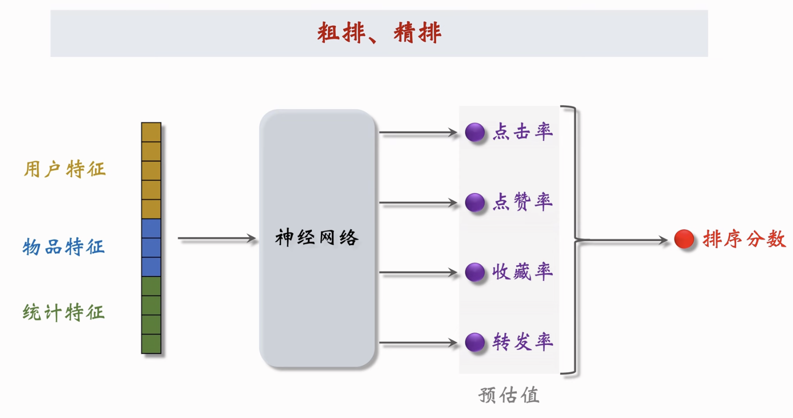
我们首先对各种指标进行预测, 然后融合这些预估分数(比如加权), 然后对结果做截断和排序.
特征数据
Profile
主要描述静态的用户和物品的特征
User Profile
- 用户id(在对应阶段做embedding)
- 人口统计学数据: 性别, 年龄
- 账号信息: 新老账号, 活跃度
- 用户感兴趣的类别, 关键词, 品牌等
Item Profile
- 物品ID(对应阶段做embedding)
- 发布时间
- GeoHash, 所在城市
- 标题, 类目, 关键词, 品牌
- 字数, 图片数, 视频清晰度, 标签数
- 内容信息量, 图片美学
统计特征
描述一定时间内的用户和物品的统计数据
用户统计特征
- 30天/7天/1天/1小时的曝光数,点击数,点赞数等
- 对图文笔记点击率, 对视频的点击率
- 对不同笔记类型的点击率
笔记(物品)统计特征
- 笔记30天/7天/1天/1小时的曝光数,点击数,点赞数等
- 男用户的点击率, 女用户的点击率等
- 作者的粉丝数量, 发布的笔记数量, 以及笔记的消费指标等
场景特征(context)
场景特征是依据用户请求的当前场景获取的.
- 用户当前GeoHash, 城市等
- 发送请求的当前时间等
- 当前是否是周末, 是否是节日等
- 设备信息(比如安卓用户和苹果用户可能倾向不一样)
特征处理
离散变量embedding, 连续变量做分桶变成离散, 或者取log(1+x)之类的平滑操作以防止数值过大.
整体流程
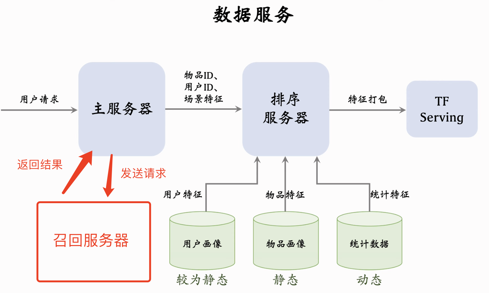
首先用户发送请求, 主服务器接受请求然后转发给召回服务器, 召回服务器多路召回并把结果(召回物品id)返回给主服务器.
然后主服务器将物品id信息,用户id信息和context发给排序服务器, 排序服务器从对应数据库中取出数据. 其中用户数据库压力小(因为用户为1), 物品数据库压力大(压力乘以召回数大小). 也因此用户特征可以略微复杂一些,但物品特征需要尽量简单,否则到时候物品服务器压力会很大. 最后统计信息是包含实时结果的, 所以需要尽快将最新信息上传并提取. 特征打包过后丢tf服务器做计算, 最后返回结果.
多目标模型
模型细节
更加详细一点的模型细节:
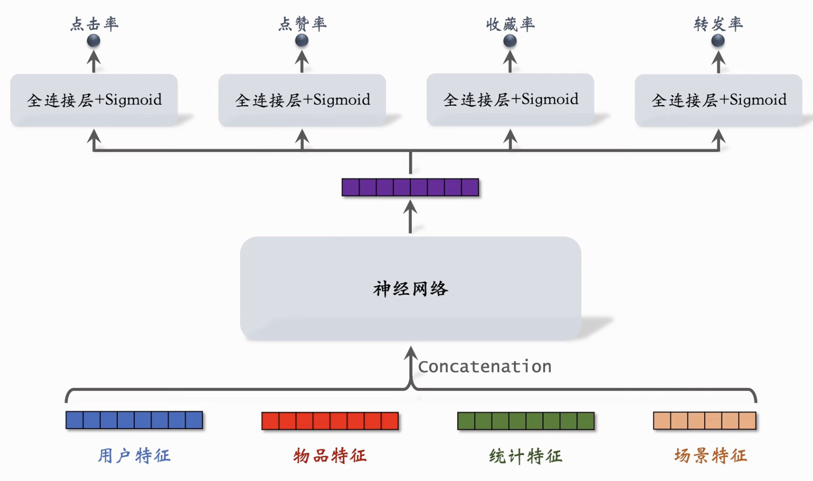
损失函数
训练的时候用的交叉熵做损失函数. 比如点击率预测为p1, 目标为y1.
\[ CrossEntropy(y_1, p_1) = - (y_1 \cdot lnp_1 + (1 - y_1) \cdot ln(1 - p_1)) \]
然后我们做加权
\[ Loss = \sum_{i=1}^4 \alpha_i \cdot CrossEntropy(y_i, p_i) \]
训练的困难-类别不平衡
困难: 每100次曝光, 我们可能有10次点击, 90次未点击; 每100次点击, 我们可能有10次收藏, 90次未收藏.
解决方案: 我们可以做down-sampling, 保留一部分负样本并舍弃其他负样本, 从而让正负样本更平衡, 同时还能节省计算.
降采样校准
但是这样又会有问题, 我们对负样本做downsampling会导致模型对点击率有高估. 所以这里我们还得做校准.
假设我们对负样本降采样, 使用 $ \alpha n_{-}$ 个负样本, 其中 $ \alpha \in (0, 1) $ 是采样率.
那么我们会有:
\[ 真实点击率 p_{true} = \frac{n_{+}}{n_{+}+n_{-}}, 预估点击率 p_{pred} = \frac{n_{+}}{n_{+}+ \alpha \cdot n_{-}}\\ => p_{true} = \frac{\alpha \cdot p_{pred}}{(1-p_{pred}) + \alpha \cdot p_{pred}} \]
MMoE(Multi-gate Mixture-of-Experts)
说人话就是输入特征输出n个expert向量, 然后生成指标数量个权重
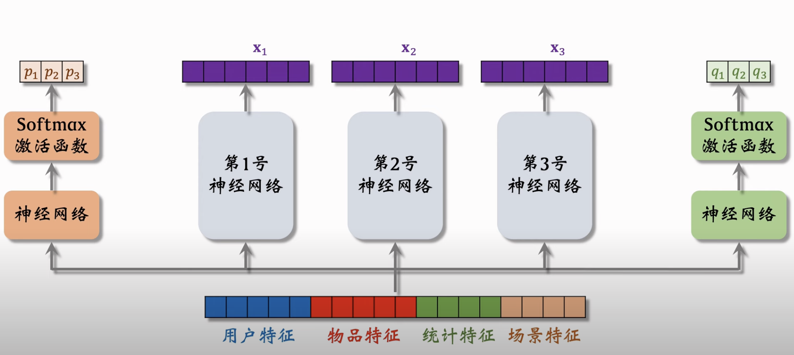
这个图里面就是3个expert以及2个指标的例子,然后上层通过权重对expert做加权然后再丢进神经网络预测指标. expert数量是超参数, 需要调.
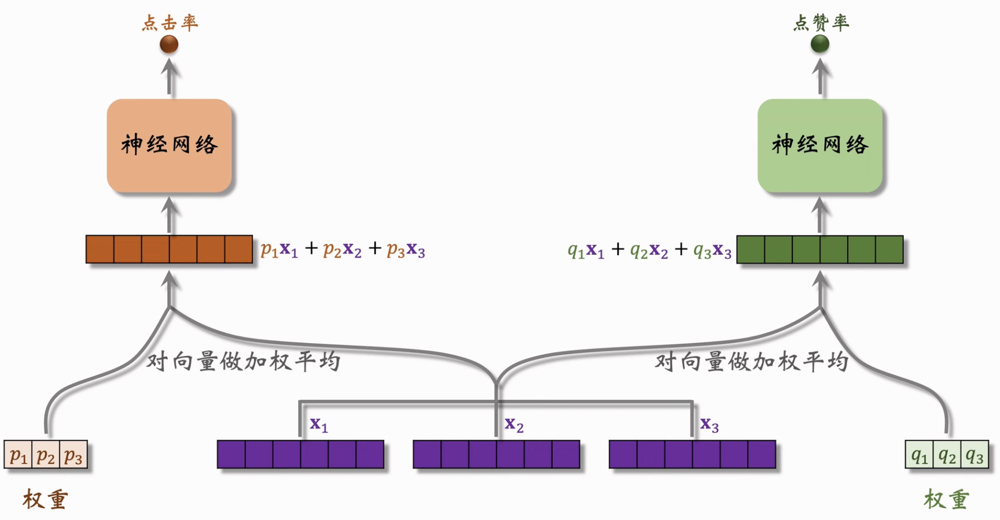
存在问题
polarize: softmax输出单值接近1, 而其他值接近0.
这种情况下可能某个指标的预测只用到了一个expert, 而其他的expert就没有派上用场.
解决方案: 对softmax的输出用dropout, 如果发生了极化现象且dropout的值恰好为单值1, 那么模型的预测效果就会很差, 这样一来模型就会尽力避免极化.
三塔模型
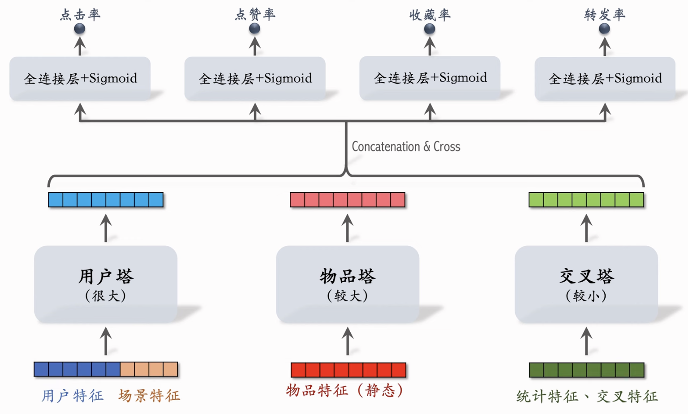
其中用户塔和物品塔还是双塔模型里面的.
- 用户塔可以很大, 反正只有算单用户向量, 线上实时计算.
- 物品塔可以较大, 因为物品塔向量大多数静态, 所以可以计算完毕之后直接离线存储, 需要的时候直接索引提取. 如果击中缓存直接提取, 没击中缓存实时计算.
- 交叉塔统计特征的动态变化, 不可以缓存; 一旦有n个物品就需要n次推理, 因此交叉塔需要尽量小.
然后前面向量计算完了再做concatenation之后丢上层模型计算指标, 这里还是需要n次推理, 不过这里的n次推理计算量比交叉塔大(粗排推理大部分计算量在模型上层).
FM(Factorization Machine)
FM说白了就是对线性模型的x求二阶交叉并做简化.
一阶线性: $ p = b + \sum_{i=1}^d w_ix_i $
二阶线性: $ p = b + \sum_{i=1}^d w_ix_i + \sum_{i=1}^d\sum_{j=i+1}^d u_{ij}x_ix_j$
这里复杂度为 $ O(d^2) $
Factorization Machine: $ p = b + \sum_{i=1}^d w_ix_i + \sum_{i=1}^d\sum_{j=i+1}^d (v_i^Tv_j)x_ix_j$
其实就是把 $ u_{ij} $ 变成 $ v_i^Tv_j $, 即将权重矩阵分解为了两个小矩阵, 矩阵维度从 d * d 变成了 d * k.
然后这里作者其实少讲了一点, 就是FM模型其实是对稀疏特征有优化的, 假设x_i和x_j为稀疏特征, 那么交叉之后很多项都会是0, 权重u_ij就会变得非常难学习. 然而FM做了优化之后, 其实最终结果是从O(kn^2)化简成了O(kn). 这里直接贴图不用latex了.
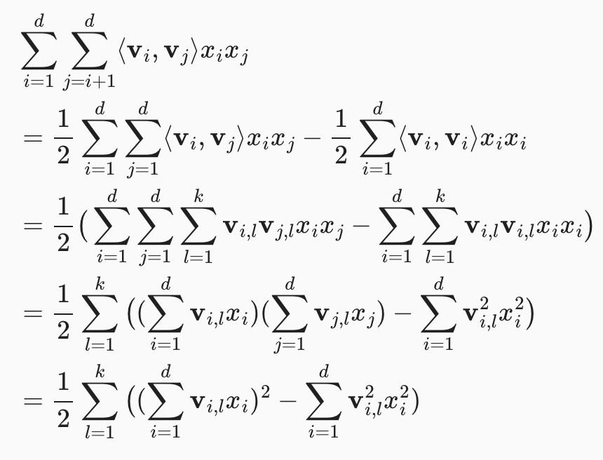
可以发现最终其实j已经不见了, 其实就是每一个 $ v_{i,l} $ 对应一个 $ x_i $ . 即计算用的是一阶, 但是混合结果是二阶交叉, 即绕了个弯子: 既利用一阶特征学习到了权重, 又保证模型后面增加的是交叉项.
然后FM的好处就是一般涉及到特征交叉就可以用, 推荐场合效果显著. 不过现在也逐渐被淘汰了.
DCN
可以增加模型复杂度并提升模型性能, 其本身可以用在召回或者排序中的所有神经网络层里面. 交叉层公式如下:
\[ x_{i+1} = x_0 \odot (Wx_i + b) + x_0 \]
即每次用x_0和上一次的输出结果求hadamard product, 然后最后加上x_0防梯度消失.
交叉网络即多个交叉层连接
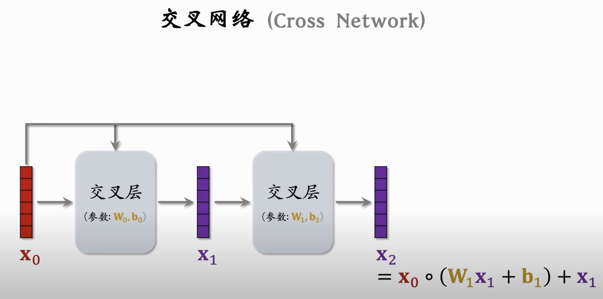
深度交叉网络则是在交叉网络的基础之上再加上全连网络.
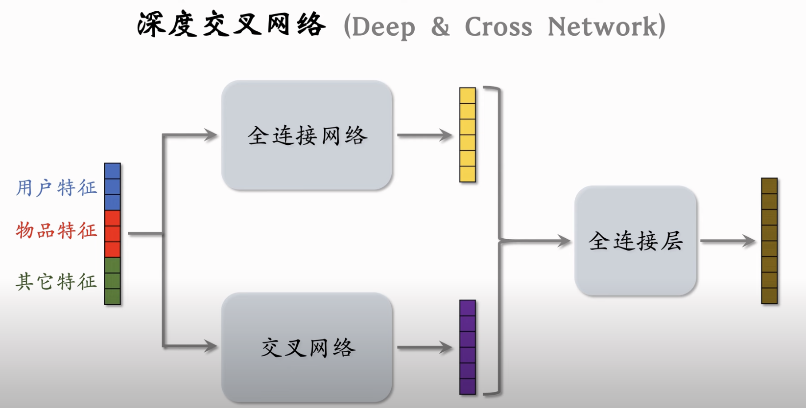
LHUC
本身为语音识别里的技术, 希望可以让语音信号能够结合说话者的特征.
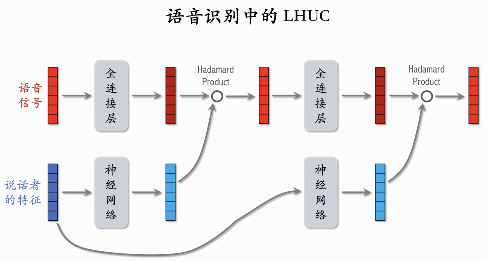
模型本身对语音信号连接全连层,对说话者特征也是连接全连层并且最后加上一层sigmoid*2让输出在0-2之间, 从而对语音信号有的放大有的缩小.
如果使用两层那么就要用两个不同的神经网络负责说话者特征的处理, 然后依然是和语音信号求hadamard product. 最后输出.
推荐系统场合将语音信号换成物品特征, 说话者特征换成用户特征.
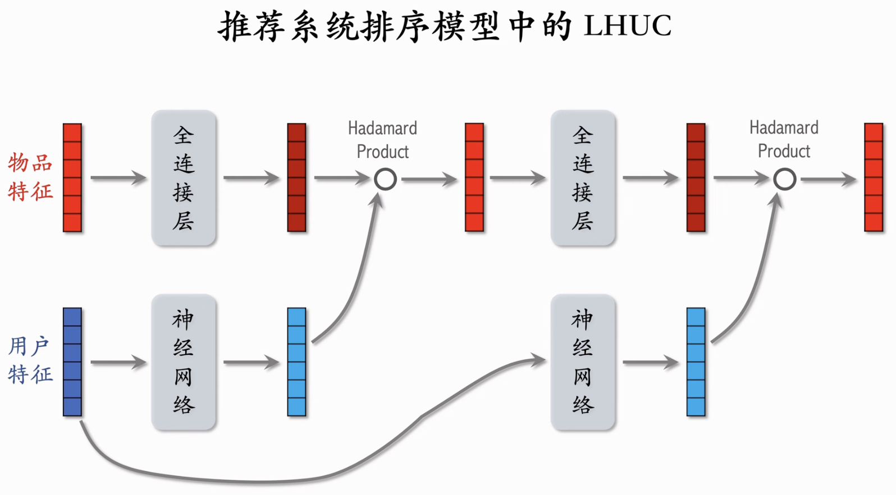
加权和交叉
SENet
本质是输入m * k矩阵, 对行取平均获得 m * 1 的向量, 然后对 m * 1 向量输入神经网络做升降维变换, 最后将输出的 m * 1向量作为权重矩阵对原 m * k矩阵求加权, 获得最终输出
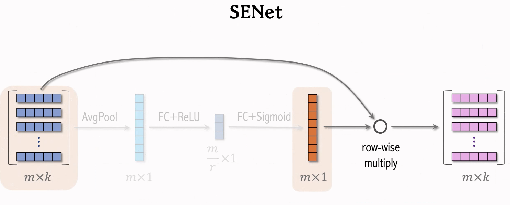
注: SENet里面并不需求输入向量的维度相同, 因为是对行求pool然后再对对应行求加权, 最终维度和输入维度是相同的, 所以其实输入维度并没有影响.
Bilinear Cross
通常的特征交叉直接做内积或者hadamard乘积, 而bilinear cross是通过一个中间矩阵连接两边特征. 比如内积就会如下图, 从而生成输出.
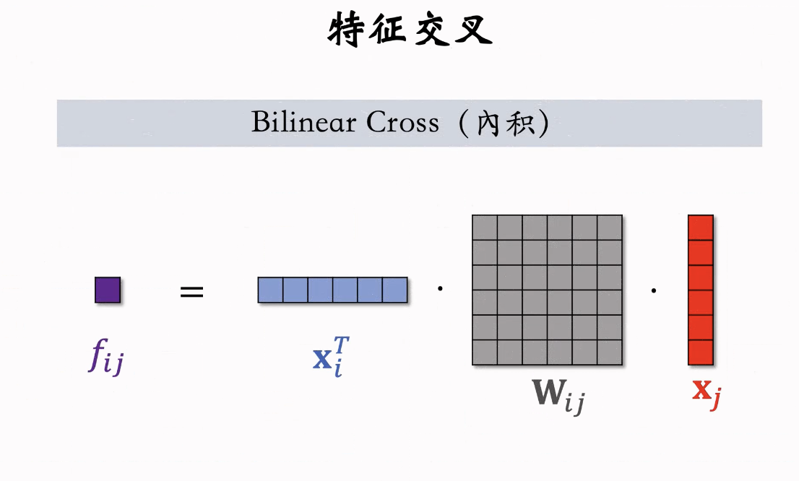
输出大小是一回事, 但是参数矩阵是另外一回事, 有m个field就会产生m**2 / 2 个参数矩阵, 参数矩阵是参数爆炸点.
FiBiNet
结合前面两者就是FiBiNet, 首先对embedding做concatenation获得一个向量, 然后对embedding做交叉然后concat获得另外一个向量, 对embedding做SENet加权然后再用bilinear cross获得最后的一个向量对这些做concatenation然后输入上层神经网络.
总结一下就是: 加权+ 交叉
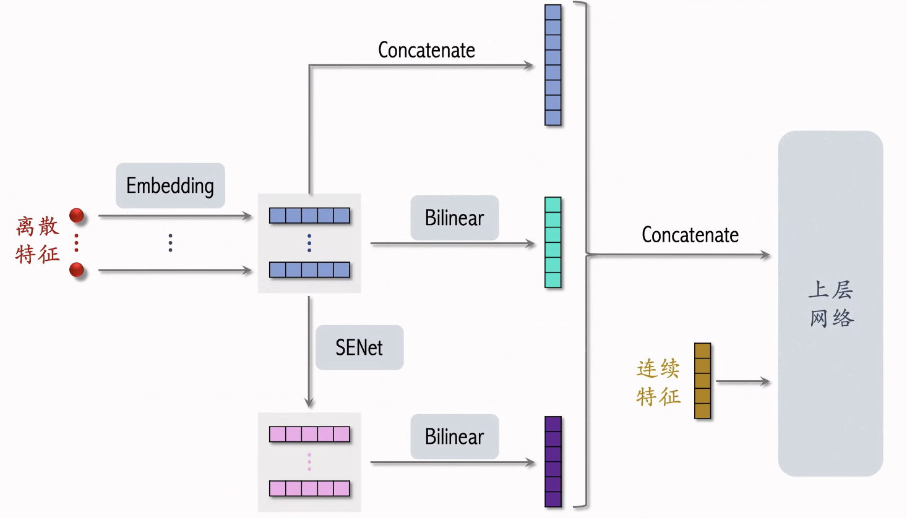
用户行为序列建模(LastN特征)
我们取用户最后交互的n个物品id做embedding得到n个特征, 然后对特征取平均后输出一个向量, 即为用户最近交互物品的特征. 这个适用于双塔,三塔和其他粗排精排模型.
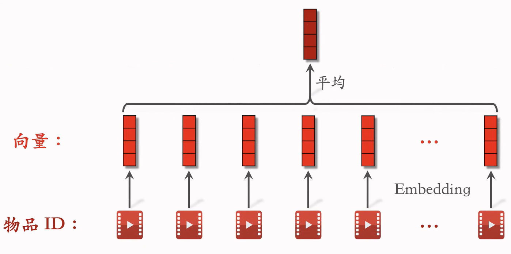
DIN模型(对LastN的优化)
上面的lastn我们看到取平均是很简单的一种方法, 我们可以使用更复杂的方式, 比如attention(加权平均)来获得更好的效果.
对于候选物品, 我们计算它和lastn的相似度, 然后以相似度为权重, 求用户lastn的物品做加权, 然后最后得到的向量就是一种新的用户特征, 输入排序模型之后再来预估点击率点赞率等.
(可以看成lastn为k,v; 候选物品为q的attention)
简单平均和attention都适用于精排, 但是对于双塔和三塔只能用简单平均. 这是因为注意力机制需要用到候选物品, 而用户塔会看不到候选物品, 从而并不能把注意力机制用在用户塔
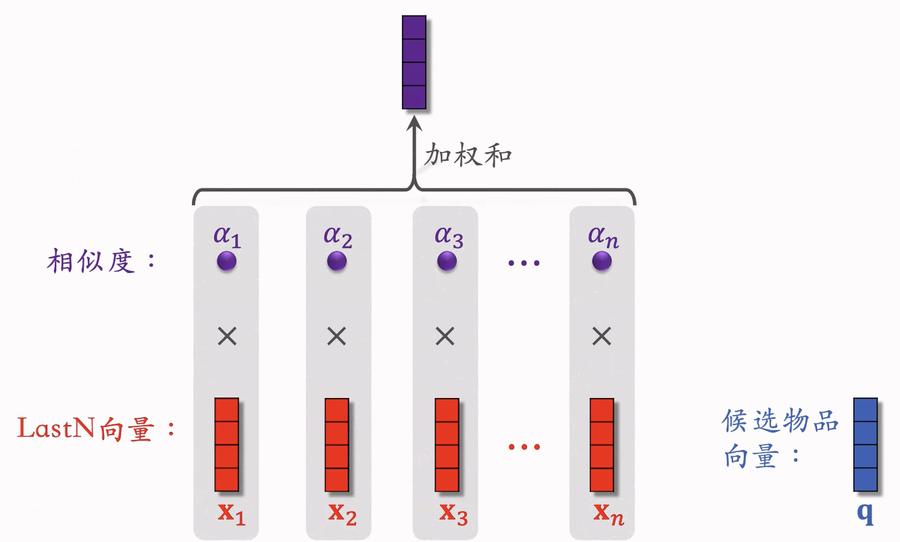
SIM模型
大致原理和DIN相似,但是DIN存在问题:注意力的计算和LastN里面的N相关, 因此我们如果用了DIN, 那么N就不可以取太大的值. 因此阿里发了一篇论文, 即SIM, 其对于每个候选物品, 在用户的LastN里面做快速查找, 先找到与候选物品最相似的TopK, 由此来降低复杂度.
这样一来复杂度从N变成了K, 从而减小了计算量.
Search
主要分为hard search和soft search.
hard search指的是我们直接对LastN里面的物品类目进行筛选.
soft search指的是我们把物品做embedding, 然后用Knn来找最接近的k个物品. 这种方法效果更好, 但是更费资源且更难实现.
Attention部分
这里需要注意, SIM对应的是大N, LastN大的话时间跨度也可能会很大, 因此我们需要使用时间信息来作为辅助数据.
- 我们将用户和某个物品交互的时刻记为
$ \delta $
- 然后我们对
$ \delta $做离散化, 再做embedding, 变成向量d.
- 我们将时间向量d和物品embedding的向量x做concatenation, 从而得到LastN物品的新表征
其他部分就完全一致了
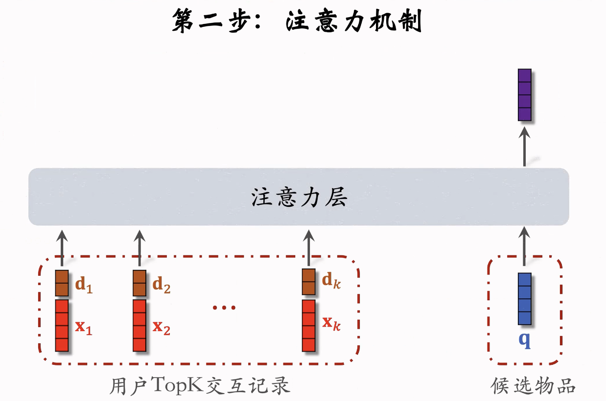
总的来说就是:
- 长序列 > 短序列
- Attention > 简单平均
- SoftSearch > Hard Search
- 使用时间信息对长序列有帮助
预估分数融合
前面的模型可以输出各种分数, 但是我们还需要对各种分数进行融合才能获取到最终的排序, 这里有很多不同的加权方式.
最简单的直接加权: $ p_{click} + w_1 \cdot p_{like} + w_2 \cdot p_{collect} ... $
点击率乘其他加权: $ p_{click} \cdot(1 + w_1 \cdot p_{like} + w_2 \cdot p_{collect} ... )$
这里 $ p_{click} \cdot p_{like} $ 其实就是 $ \frac{n_{点击数量}}{n_{曝光数量}} \cdot \frac{n_{点赞数量}}{n_{点击数量}} $ , 最终代表的就是曝光后点赞的数量.
海外某短视频app的融分方式: $ (1+w_1 \cdot p_{time})^{a_1} \cdot (1+w_2 \cdot p_{like})^{a_2} $
国内某视频app的融分方式: 假设预估时长为 $ p_{time} $, 同时假设其排名为 $ r_{time} $, 那么其得分为 $ \frac{1}{r_{time}^{a} + b} $
最终融合分数: $ \frac{1}{r_{time}^{a_1} + \beta_1} + \frac{1}{r_{click}^{a_2} + \beta_2} + \frac{1}{r_{like}^{a_3} + \beta_3} + ...$
国内某电商app的融分方式:
流程: 曝光, 点击, 加购物车, 付款.
模型估计: $ p_{click} $, $ p_{cart} $, $ p_{pay} $
分数: $ p_{click}^{a_1} \times p_{cart}^{a_2} \times p_{pay}^{a_3} \times price^{a_4}$
视频播放建模
时长
区别于图文, 视频类型还涉及到播放时长和完播率.
然而直接用regression建模播放时长效果并不好, youtube有一篇论文专门解决这个. 我并没有直接去看原论文,这里就只记录作者介绍的方法.
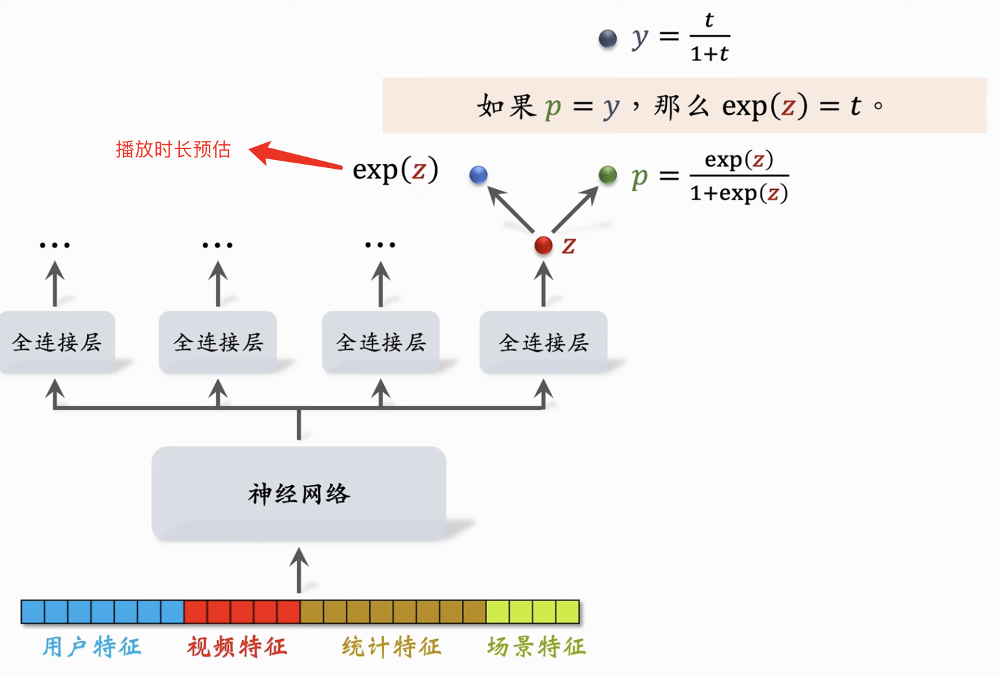
这里我们对输出做sigmoid然后对y_true也做1 / 1+y的处理.
训练的时候我们用交叉熵, 这样最后我们只需要对输出取exp(z)即可表示时长.
完播
两种建模方式
回归: 假设视频10分钟, 用户看了4分钟, 那么y=0.4. 我们通过预测播放率来拟合y, $ loss = y \cdot logp + (1-y) \cdot log(1-p) $ .
二分类: 比如我们将完播80%作为标准, 大于8分钟为正样本, 小于8分钟为负样本. 然后我们来预测模型为正样本的概率.
然而不管怎么样, 我们都不可以直接把输出的完播率用到融分公式. 因为视频的长度越长相对的完播率就会越低, 所以我们必须先用视频时长来拟合完播率, 最后再用预估完播率做调整.
\[ p_{finish} = \frac{预估完播率}{f视频长度} \]
最后我们用 $ p_{finish} $ 来加入融分公式.
重排
多样性抽样: MRR, DPP
依据为精排分数以及内容多样性, 抽样之后规则打散, 搭配运营策略呈现.
物品多样性问题
简单来说就是我们希望最终得到的推荐物品应该是尽可能的多类别, 也即让物品尽可能得不相似. 那么首先就需要一个标准: 相似度怎么度量.
相似度的度量
- 基于物品属性标签(类别, 品牌, 关键词等)
- 基于物品向量表征
一般双塔模型学习到的物品向量效果都不太好; 与之对比, 基于内容的向量表征会有更好的效果(即NLP做文本处理, CV做图片处理)
基于属性标签: 比如依据 一级类目, 二级类目, 品牌来计算相似度.
物品i: 美妆, 彩妆, 香奈儿
物品j: 美妆, 香水, 香奈儿
这么一来, sim_1(i, j) = 1, sim_2(i, j) = 0, sim_3(i, j) = 1.
基于物品向量:
双塔模型: 由于物品的头部效应, 大部分点击物品都是热门物品, 而对于其他物品, 双塔模型并不能很好的学会它们的表征. 且如果使用物品塔计算的向量, 那么就很难处理新物品.
基于内容的物品表征: 对于图片部分我们使用CNN, 对于文本部分我们可以使用bert等模型.
但是这里涉及一个难点, 如果使用外部训练过的模型, 那么直接迁移到业务范围效果就不太好, 但如果想用自己业务内数据, 那么又存在人工标注的问题.
解决方案: CLIP, 具体的在新一篇博客里面已经讲过了, 其主要思想就是匹配的图文获得的score应该大于不匹配的图文, 使用对比的方式我们可以训练出预测图文是否匹配的模型. 其优势在于我们并不需要人工标注, 且小红书本来就包含不少图文数据, 直接丢模型训练就行
提升多样性的方法
首先几亿物品经过召回变成几千, 粗排和精排阶段我们对物品做pointwise打分, 各个指标我们对其进行分数融合获得最终分数reward_i, 这个reward就是表示物品对用户的价值.
我们对n个候选物品打分, 获得n个reward.
最后我们对结果进行后处理, 要求物品不仅仅是总分高, 还必须要有多样性, 后面我们还会介绍多样性算法. 其中精排的后处理我们一般称为重排
注意, 不仅仅是精排, 粗排过后的打分也可以进行后处理的多样性处理, 而且能取得显著效果.
Maximal Marginal Relevance(MMR)
精排对n个物品打分, 融合之后的分数为reward_1...reward_n, 然后我们记物品i和物品j的相似度为sim(i,j), 最终我们从n个物品选出k个, 要求不仅有高reward, 同时多样性也尽可能高.
假设选中的物品我们记为 $ \delta $, 未选中物品我们记为R
\[ MR_i = \theta \cdot reward_i - (1-\theta) \cdot max_{i \in S} sim(i,j) \]
而MMR就是
\[ \mathop{\arg\max}\limits_{i \in R} MR_i \]
- 我们初始化S为空集, R为全集
- 选精排分数最高的物品直接从R移到S
- 做k-1轮循环, 每轮计算R中所有物品分数
$ \{MR_i\}_{i \in R} $
- 最后我们选出分数最高的物品, 从R移到S.
滑动窗口:
上述的MMR有个问题, 如果我们选中越多物品(S越大), 那么我们就越难找出一个物品 $ i \in R $ 来使得i与S中物品都不相似, 即当S很大的时候, $ max_{j \in S}sim(i, j) $总会为1, 即S中总有元素和选出的元素有高相似度, 导致MMR算法失效.
解决方案就是滑动窗口, 我们取最后选出的某些物品作为滑动窗口W, 用W来代替MMR公式中的S, 即我们只考虑新加入集合的物品和最新取的某些物品的相似度而不是考虑整体相似度. 从而防止失效问题.
DPP
Determinantal point process(行列式点过程).
超平行体
一组向量可以决定一个k维超平行体.
比如v1, v2可以决定一个平行四边形;v1, v2, v3可以决定一个平行六面体.
假设向量线性相关, 那么必定会导致的问题就是向量3落在向量12的平面内导致体积为0, 所以将超平行体的Volumn最大化的过程就是向量多样化的过程.
而超平行体的体积又可以表现为矩阵的行列式
给定k个物品, 向量表征为v1,v2...vk(dim为d,且d >= k), 将其记为矩阵V
\[ det(V^TV) = vol(P(v_1, v_2,...v_k)) ^ 2 \]
因此,可以用矩阵的行列式来表示物品向量多样性.
推荐系统
Hulu的论文将dpp用在了推荐系统.
\[ \mathop{\arg\max}\limits_{S:\left|S \right|=k} \theta \cdot (\sum_{j \in S} reward_j) + (1-\theta) \cdot log (det(V^T_SV_S)) \]
其中可以用 $ A_s $ 来表示 $ V^T_SV_S $
而DPP是一个组合优化问题(从1-n中选出最优的k个元素), 且被认为是一个np hard问题, 只能近似求解.
每次选物品的时候, 我们去保证
\[ \mathop{\arg\max}\limits_{i \in R} \theta \cdot reward_j + (1-\theta) \cdot log (det(A_{S \cup \{i\}})) \]
每次纳入一个新物品, 矩阵多了一行和一列, 我们希望加入一行一列的同时, 保证行列式尽量大.
暴力求解的情况, 计算行列式为O(S^3), 又因为物品有R个, 我们需要取出k个, 即O(S^3 * R * k) => O(nk^4), 而计算矩阵A还需要O(n^2 * d), 即最终复杂度为 $ O(n^2d + nk^4) $
Hulu的优化是能够利用O(nk^2)计算行列式的值(Cholesky分解).
Cholesky分解把矩阵A分成 $ A = LL^T $ , 其中L为下三角矩阵, 从而可以用对角线乘积表示行列式. 每次加入一行一列, 我们只需要算出相对原分解产生了哪些变化即可, 从而可以快速算出A_{S {i}}的分解.
后续滑动窗口还是和MRR一样
还有规则约束即改变取物品的集合R即可.
重排的规则
最多连续出现k篇某种笔记
比如小红书会推荐图文笔记和视频笔记, 假设我们规定最多连续出现5篇图文笔记, 那么如果i到i+4都是图文笔记, 那么i+5必须是视频笔记
每k篇笔记最多出现一篇某种笔记
比如运营推广笔记, 我们会给精排分数乘以大于1的系数(boost)来帮助笔记获得曝光.
boost一般不是用户喜欢的, 出多了会影响用户体验, 所以我们为了限制boost, 限制每k=9篇笔记最多出现一篇运营推广笔记. 即如果i为运营推广笔记, 那么i+1到i+8就不能是运营推广笔记.
前t篇笔记最多出现k篇某种笔记
比如排面前t的物品最容易被看到, 对用户体验最重要(小红书top4为首屏).
而小红书推荐系统有电商卡片笔记, 过多可能会影响体验. 因此前t=1篇笔记最多出现k=0篇电商卡片, 前t=4篇笔记最多出现k=1篇电商卡片
MR加规则
MMR中我们每次从R中选出物品丢到S, 那么如果加上规则, 我们就可以先对R中物品进行规则过滤, 选出满足条件的集合R, 然后对过滤过的R做MMR.